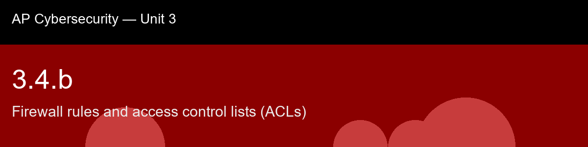

3.4.b recap, Firewall rules and access control lists (ACLs)
Nice work today. Here's what to lock in:
- Recap handout:
post-lecture-handout.docx
- Simulation: SimLab
- Self-check quiz: due before next class
The big picture: Rule shadowing is the concept to walk away from this skill actually able to diagnose, not just define: a broad allow rule sitting above a narrow, more careful deny rule doesn't conflict with that deny rule, it makes it unreachable dead code, and the fix is never to argue about which rule is more correct, it's purely about which one is physically listed first. That's a sharper, more mechanical version of the same lesson 3.3.a taught about misconfigured inter-VLAN routing defeating segmentation: a security boundary that looks correct on paper can be silently defeated by one ordering mistake nobody would notice just by reading the rules in isolation. Tie the implicit deny-all back to 3.2.b's least-privilege framing too, default-deny is least privilege applied to an entire network boundary, permitting only what's explicitly needed and rejecting everything else by default rather than trying to enumerate every possible bad packet, which is a losing game against an adversary who only needs to find the one case you forgot to write a rule for.
Key terms to lock in:
- Access control list (ACL), an ordered list of allow/deny rules a firewall applies to traffic, matched on source, destination, port, and protocol.
- First-match-wins, the evaluation model where a packet is judged by the first rule it matches, top to bottom; later rules are never consulted for that packet.
- Implicit deny (default deny), the unwritten or explicit final ACL rule that drops any packet matching nothing above it.
- Rule shadowing, when a broad rule earlier in the list matches everything a more specific rule below it would match, making the lower rule unreachable.
- Rule specificity, how narrowly a rule's conditions match traffic; a rule scoped to one host and one port is more specific than one that matches "any" for those fields.
Common misconceptions -- don't fall for these:
- "The order of ACL rules doesn't matter as long as all the right rules exist." → Order is everything under first-match-wins; a correct rule placed after a broader matching rule never fires.
- "If there's no explicit deny-all at the end, unmatched traffic is allowed." → Real firewall ACLs are default-deny; unmatched traffic is dropped by the implicit deny even if no rule states it. (Some routers default to allow, the AP framework assumes default-deny for security devices.)
- "A more specific deny rule automatically overrides a broader allow rule." → Nothing "overrides" anything in a first-match-wins engine. The only thing that matters is which rule is physically listed first.
Learning objective(s): 3.4.B, 3.4.C

## 3.4.b recap, Firewall rules and access control lists (ACLs)
Nice work today. Here's what to lock in:
- Recap handout: `post-lecture-handout.docx`
- Simulation: SimLab
- Self-check quiz: due before next class
**The big picture:** Rule shadowing is the concept to walk away from this skill actually able to *diagnose*, not just define: a broad allow rule sitting above a narrow, more careful deny rule doesn't conflict with that deny rule, it makes it unreachable dead code, and the fix is never to argue about which rule is more correct, it's purely about which one is physically listed first. That's a sharper, more mechanical version of the same lesson 3.3.a taught about misconfigured inter-VLAN routing defeating segmentation: a security boundary that looks correct on paper can be silently defeated by one ordering mistake nobody would notice just by reading the rules in isolation. Tie the implicit deny-all back to 3.2.b's least-privilege framing too, default-deny is least privilege applied to an entire network boundary, permitting only what's explicitly needed and rejecting everything else by default rather than trying to enumerate every possible bad packet, which is a losing game against an adversary who only needs to find the one case you forgot to write a rule for.
**Key terms to lock in:**
- **Access control list (ACL)**, an ordered list of allow/deny rules a firewall applies to traffic, matched on source, destination, port, and protocol.
- **First-match-wins**, the evaluation model where a packet is judged by the first rule it matches, top to bottom; later rules are never consulted for that packet.
- **Implicit deny (default deny)**, the unwritten or explicit final ACL rule that drops any packet matching nothing above it.
- **Rule shadowing**, when a broad rule earlier in the list matches everything a more specific rule below it would match, making the lower rule unreachable.
- **Rule specificity**, how narrowly a rule's conditions match traffic; a rule scoped to one host and one port is more specific than one that matches "any" for those fields.
**Common misconceptions -- don't fall for these:**
- "The order of ACL rules doesn't matter as long as all the right rules exist." → Order is everything under first-match-wins; a correct rule placed after a broader matching rule never fires.
- "If there's no explicit deny-all at the end, unmatched traffic is allowed." → Real firewall ACLs are default-deny; unmatched traffic is dropped by the implicit deny even if no rule states it. (Some routers default to allow, the AP framework assumes default-deny for security devices.)
- "A more specific deny rule automatically overrides a broader allow rule." → Nothing "overrides" anything in a first-match-wins engine. The only thing that matters is which rule is physically listed first.
**Learning objective(s):** 3.4.B, 3.4.C